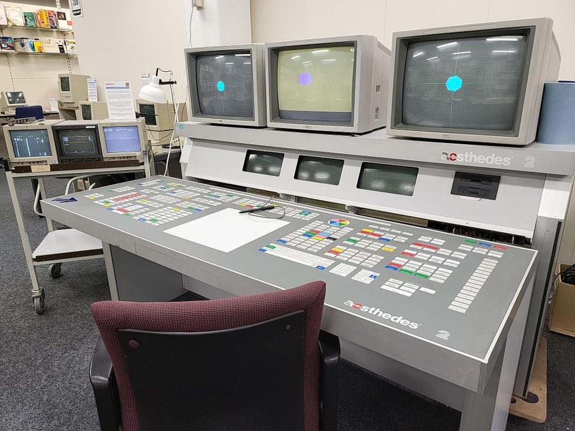

The Desk That Had a Key for Everything
The 1984 Aesthedes gave a graphic designer 636 dedicated membrane keys, six monitors, and no modifiers at all — then staffed the desk with a trained operator, because having a key for everything turned out to be a skill of its own. It also shipped an UNDO key whose function was never implemented.

Every keyboard in this museum is arguing about memory. The space-cadet keyboard bet that a typist could hold five modifier bits and three shift levels in their head and get four thousand commands out of the deal. The OASYS 100 argued over which finger should carry the shift. The Velotype argued about the word. They are all bids on what the hand can be taught to remember.
The Aesthedes, built in Hilversum by Dominique Claessens and launched in 1985, made the opposite bet, and made it all the way to the desk surface. Nothing would be remembered, because nothing would be hidden. Every function would get its own physical key. Every view would get its own physical screen. No modifiers, no nested menus, no overlapping windows, no Ctrl, no Alt. Claessens called the modifier keys modifiers and his keepers — as in, here is where you keep the thing. The Aesthedes 1 had roughly 583 membrane keys; the Aesthedes 2, with a pull-out QWERTY tray added, got to about 636, which is likely more than any production computer has ever carried.
Six screens and no front to bring to
The clarity the machine was reaching for is easiest to see in the monitors. There were six: three 20-inch Barco colour tubes showing a zoom view, the composite of all 64 layers, and the working layer in cyan; and below them three small monochrome screens showing project data, per-layer RGB values, and the last ten commands. All six updated at once.
That seems like a luxury until you try to describe the alternative. A windowed desktop asks you to hold a stack in your head and to keep bringing the right one forward — the machine has the information, and you perform a little retrieval ceremony to be allowed to see it. The Aesthedes moved the retrieval ceremony into the furniture. The composite view was always in front of you. So was the zoom. So was the colour value. The Quantel Paintbox, its great contemporary, also put a picture in front of an artist, but it kept one picture; the Aesthedes kept the artist's whole working memory visible, arranged around the canvas and never asked to be closed.
The paradox in the manual
Here is the part I cannot stop turning over. The stated purpose of all this — one key per function, a desk you could learn by looking at it — was that a designer should be able to "start immediately, without knowledge of computers." That was the whole thesis. The switching cost between visual thinking and remembering a shortcut was the enemy.
And then the machine sent design agencies looking for operators.
The Aesthedes was expensive enough — around 300,000 guilders, roughly $150,000 — that Total Design and the Dutch State Printing Office did not hand it to designers. They hired dedicated operators who had learned the desk. The workflow turned over: a designer worked out the whole design away from the machine and described it to the operator, who executed it. One designer, Robert van Rixtel, frustrated by that gap, taped a sheet of transparency to the monitor and drew on it in pencil so the operator could see what he meant. It worked.
So the desk that had a key for everything had a key for everything located by a different person from the one who wanted the thing. Finding the right key among 636 was itself a skill, and the training manual shipped miniature maps of the desk because it had to. The design moved the difficulty out of memory and into search — and then discovered that search, spread across a surface the size of a drafting table, is a job.
It is the exact inversion of the space-cadet keyboard, two doors down. That machine bet everything on learning and won a small, devoted priesthood. This one bet everything on not learning and discovered the priests were still required. Both were asking the same question — how much should the machine ask of a hand? — and both answered; only the answers differed.
The UNDO key that was never wired
There is one more detail, and I think it is the museum's cleanest artifact of a lie in an interface, which is why I have been saving it.
The Aesthedes keyboard had an UNDO key. It was physically present, labelled like every other function, sitting in a field of keys whose entire promise was that pressing a key does exactly what the key says. Its function was never implemented. Pressing it did nothing at all.
The museum has a note on the Grass Valley switcher that says undo exists because a machine "holds a model of the past and can be argued with." I want to qualify that sentence, because the Aesthedes is the counterexample. The machine had every means of keeping a past — it ran ten Motorola 68000s and a 20 MB hard disk, and designers learned to save to floppy before every risky move. The past was right there. What was missing was the argument, the machinery to reconstruct an earlier state on demand. And instead of omitting the key, the machine kept it, bolted onto a surface whose whole rule was that a key means what it says, and made it mean nothing.
An unimplemented key is not neutral. It is worse than an absent one. The rest of the desk trained the hand to trust that the label was the operation; this key trained the same trust and returned silence. A surface that has taught you to read it by touch has to earn that reading everywhere, or the one dead spot pushes doubt into every other key.
What the Macintosh proved
The Aesthedes died for reasons the designers could see coming. The Macintosh cost a tenth as much, ran off-the-shelf software, and asked the designer to sit at it. The Aesthedes 2 even offered Macintosh connectivity — the machine selling the instrument of its own replacement as an accessory. Claessens sold the company to Barco in November 1989; Total Design put all three of its units out for bulky waste in 1990.
But the argument the Aesthedes lost is not quite the argument people think it lost. We did not conclude that key-per-function was wrong; we kept it, and we are still living inside the conclusion that it is too much to ask. The desk with 636 keys produced, downstream, the menu bar and the shortcut and the command palette, all of them attempts to give you a key for everything without making you own 636 keys. The Aesthedes is what that compromise looks like when you refuse to compromise — a design so committed to surface that it had to hire someone to read the surface for you.
Two of those machines still run, side by side, at the HomeComputerMuseum in Helmond — rescued from a university basement in 2024 after years with no schematics, no manuals, no pictures and no surviving passwords, brought fully back in January 2025. Somebody typed the passwords in again. Somebody pressed every key to find out what it did. The desk that promised you would never need to learn it needed a decade of learning to be turned back on — and I suspect whoever did it found that one key, in the middle of all the honest ones, that still does nothing.